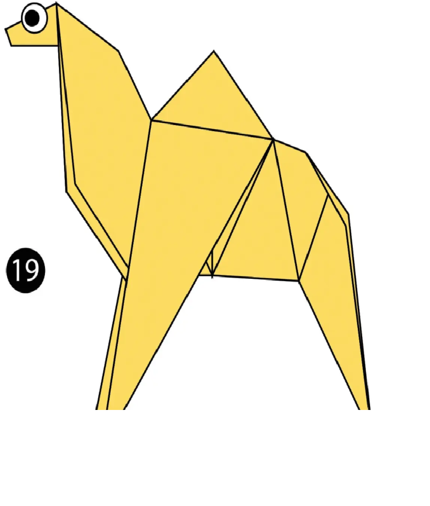
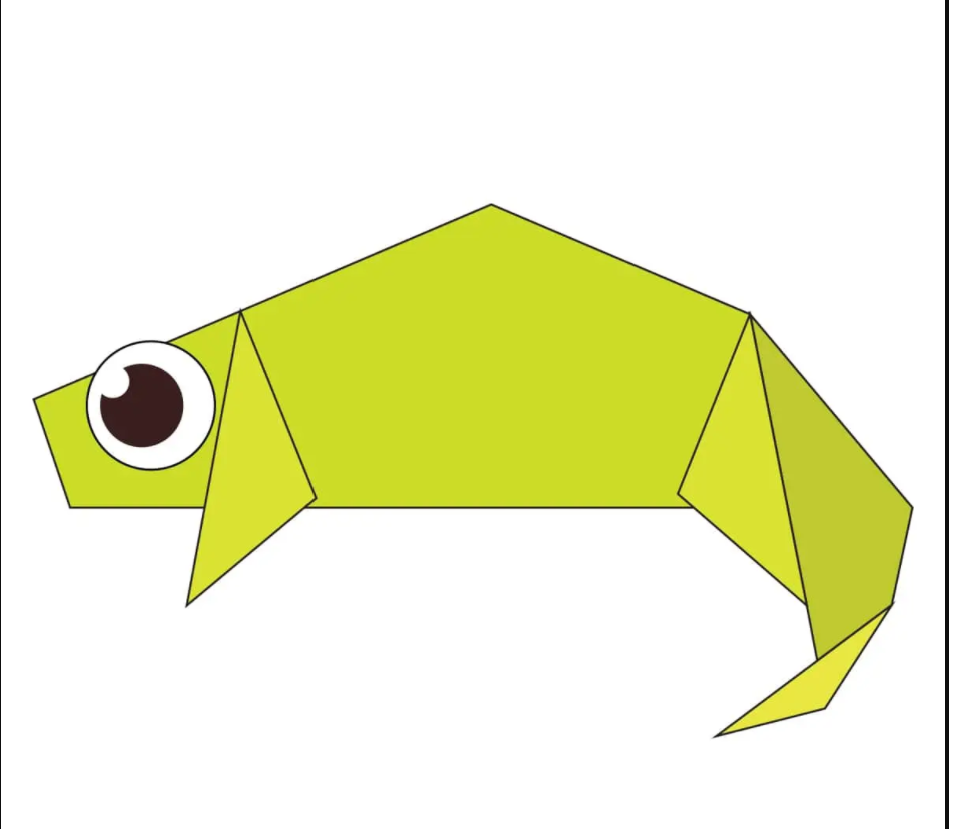

Origami Design
About Us
Follow Us

Interesting Facts about Camels
- Camels have three sets of eyelids and two rows of eyelashes to keep sand out of their eyes.
- Camels can completely shut their nostrils during sandstorms.
- Thanks to thick pads of skin on their chest and knees, camels can comfortably sit in very hot sand.

Interesting Facts About Chameleons
- Chameleons are reptiles that are part of the iguana suborder
- Changing skin color is an important part of communication among chameleons
- Most Chameleons have a prehensile tail that they use to wrap around tree branches